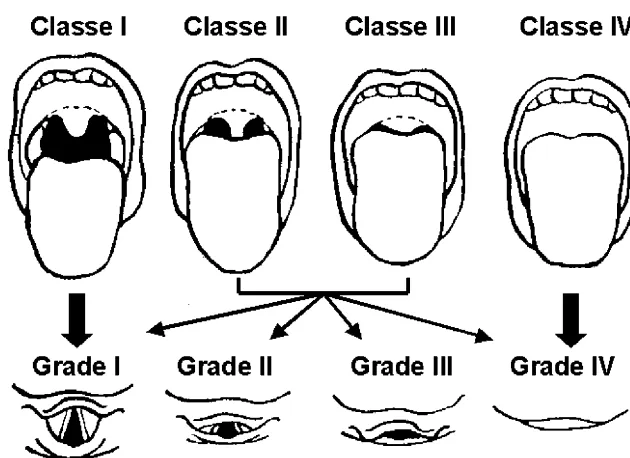

Conférence de consensus 7 juin 2002, Saint-Mandé, France
Cette conférence a été organisée et s'est déroulée conformément aux règles méthodologiques préconisées par l'Agence nationale d'accréditation et d'évaluation en santé (Anaes) qui lui a attribué son label de qualité.
Les conclusions et recommandations présentées dans ce document ont été rédigées par le Jury de la conférence, en toute indépendance. Leur teneur n'engage en aucune manière la responsabilité de l'Anaes.
Patrick Ravussin, Président, (Hôpital Central - Sion, Suisse), Anne-Marie Cros (Hôpital Pellegrin, Bordeaux), Marc Gentili (CMC Saint-Vincent, Saint-Grégoire), Olivier Langeron (CHU Pitié Salpêtrière, Paris), Claude Martin (CHU Hôpital Nord, Marseille), Serge Molliex (Hôpital Bellevue, Saint-Etienne), Philippe Monnier (CHUV - Lausanne, Suisse).
Serge Molliex*, Président (Hôpital Bellevue, Saint-Etienne), Jean-Claude Berset (Clinique Cecil SA, Lausanne, Suisse), Valérie Billard (Institut Gustave-Roussy, Villejuif), Evelyne Bunouf (Hôpital Pellegrin, Bordeaux), Stéphane Delort-Laval (Clinique Saint-Augustin, Bordeaux), Béatrice Frering (Centre Anticancéreux Léon-Bérard, Lyon), Marc Freysz (CHU Dijon), Olivier Laccourreyre (Hôpital Européen Georges-Pompidou, Paris), Didier Lugrin (Clinique Saint-Georges, Nice), Jean-Pierre Mustaki (CHUV Lausanne, Suisse), Catherine Penon (Hôpital Kremlin-Bicêtre, Le Kremlin-Bicêtre), François Sztark (Hôpital Pellegrin, Bordeaux), Olivier Tueux (Centre Hospitalier, Pau).
☆ Conférence de consensus. Prise en charge des voies aériennes en anesthésie adulte à l'exception de l'intubation difficile. 7 juin 2002, Saint-Mandé.
Frédéric Adnet (Samu 93, Hôpital Avicenne, Bobigny), Bruno Bally (Hôpital Michalon, Grenoble), Dominique Boisson-Bertrand (Hôpital Central, Nancy), Jean-Louis Bourgain (Institut Gustave-Roussy, Villejuif), Nicolas Bruder (CHU La Timone, Marseille), Madeleine Chollet-Rivier (CHUV Lausanne, Suisse), Bertrand Debaene (Hôpital Jean-Bernard, Poitiers), Pierre Diemunsch (Hôpital Civil, Strasbourg), Claude Ecoffey (Hôpital Pontchaillou, Rennes), Jean-Pierre Estebe (Hôpital Hôtel-Dieu, Rennes), Daniel Francon (Institut Paoli-Calmette, Marseille), Jean Lacau Saint-Guily (Hôpital Tenon, Paris), Georges Mion (HIA Bégin, Saint-Mandé), Didier Pean (Hôpital Hôtel-Dieu, Nantes).
Est exclue du cadre de cette conférence, la prise en charge des voies aériennes réalisée dans le cadre de la médecine extrahospitalière, de l'urgence médicale hospitalière ou en-
Tableau 1
Niveaux de preuve en médecine factuelle
| Niveau I | Étude randomisée avec un faible risque de faux positifs () et de faux négatifs ( à 10%) |
| Niveau II | Étude randomisée avec un risque élevé, ou puissance faible ou non précisée |
| Niveau III | Étude non randomisée avec groupe de sujets témoins contemporains, grande étude de cohorte, Étude « cas-témoins » |
| Niveau IV | Étude non randomisée avec groupe de sujets témoins historiques. |
| Niveau V | Études de cas. Avis d'experts. |
Tableau 2
Force des recommandations en médecine factuelle
| A | Deux (ou plus) études de niveau I |
| B | Une étude de niveau I |
| C | Étude(s) de niveau II |
| D | Une étude (ou plus) de niveau III |
| E | Étude(s) de niveau IV ou V |
core celle réalisée en anesthésie pédiatrique ou lors d'une ventilation à poumons séparés.
Le niveau de preuve et la force des recommandations sur lesquels s'est appuyé le jury sont présentés dans les Tableaux 1 et 2.
L'intubation trachéale est considérée comme difficile dans environ 5 % des cas [1]. L'appréciation de cette incidence se heurte à plusieurs problèmes : la définition même de l'ID et les conditions optimales de sa réalisation. La conférence d'experts de 1996 [2] définit l'ID pour un anesthésiste expérimenté lorsqu'elle nécessite plus de 10 minutes et/ou plus de deux laryngoscopies dans la position modifiée de Jackson avec ou sans manœuvre laryngée. Depuis, la surélévation systématique de la tête a été contestée dans une étude [3], mais il n'existe pas d'arguments pour modifier cette définition. De plus, dans les différentes études cliniques, les conditions optimales d'intubation ne sont pas toujours précisées (position de la tête, mobilisation laryngée, profondeur d'anesthésie ou degré de curarisation) et devraient faire l'objet d'une standardisation. Du fait de son incidence et de ses conséquences, il importe de disposer de critères prédictifs performants d'intubation difficile.
La classification de Mallampati [4] prise isolément n'est pas prédictive d'une ID, son évaluation est subjective et varie selon l'opérateur. Sa corrélation avec les grades de Cormack et Lehane [5] est peu fiable pour les classes 2 et 3 ; les classes 1 et 4 de Mallampati sont, en revanche, bien corrélées avec les grades 1 et 4 (Fig. 1). Différents scores associant plusieurs critères anatomiques [6,7] : poids, mobilité céphalique, mobilité mandibulaire, rétrognathie, distance thyromentale ont montré une faible puissance prédictive de l'ID (Grade D). Certaines situations pathologiques ou morphologiques prédisposant à une ID ont été recensées :

Fig. 1. Corrélation entre la classe de Mallampati et la classification de Cormack et Lehane.
En revanche l'obésité, même morbide, ne semble pas être isolément un facteur de laryngoscopie difficile. Ce n'est plus le cas lorsqu'elle s'associe à une édentation ou à un SAOS [9]. Les données validées concernant la grossese sont à ce jour contradictoires [10].
Le score d'Arné combine les éléments relatifs au terrain, les notions anamnestiques et les critères anatomiques (Tableau 3) [11]. Il intègre la notion d'antécédents d'ID, les pathologies favorisantes, les symptômes respiratoires, et 4 critères anatomiques : l'ouverture de bouche (OB), la distance thyromentale (DTM), la mobilité cervicale, la classe de Mallampati.
Tableau 3
Score d'Arné
| Critères | Valeur simplifiée |
|---|---|
| Antécédents d'ID | 10 |
| Pathologies favorisantes | 5 |
| Symptômes respiratoires | 3 |
| OB > 5 cm ou subluxation > 0 | 0 |
| 3,5 cm < OB < 5 cm et subluxation = 0 | 3 |
| OB < 3,5 cm et subluxation < 0 | 13 |
| Distance thyromentale < 6,5 cm | 4 |
| Mobilité de la tête et du cou > 100° | 0 |
| Mobilité de la tête et du cou 80 à 100° | 2 |
| Mobilité de la tête et du cou < 80° | 5 |
| Classe de Mallampati 1 | 0 |
| Classe de Mallampati 2 | 2 |
| Classe de Mallampati 3 | 6 |
| Classe de Mallampati 4 | 8 |
| Total maximum | 48 |
En prenant 11 comme valeur seuil pour ce score, sa performance est bonne avec une sensibilité et une spécificité à 93 %, une valeur prédictive négative (VPN) à 99 %. Seule sa valeur prédictive positive (VPP) est faible à 34 %. Il est donc particulièrement performant pour prédire une intubation facile (Grade D).
Ce score intègre par ailleurs les trois éléments préconisés par l'expertise collective de la Sfar [2] permettant d'envisager une ID chez l'adulte : classe de Mallampati (> 2), distance thyromentale (< 65 mm), ouverture de bouche (< 35 mm). Ces 3 éléments doivent être recherchés en consultation d'anesthésie et complétés par l'appréciation de la proéminence des incisives supérieures, de la mobilité mandibulaire (subluxation nulle ou impossible) et cervicale (mobilité de la tête et du cou comprise entre 80-100° ou < 80°) (Grade D).
Les critères paracliniques n'ont pas démontré leur intérêt dans le dépistage d'une ID.
La conférence d'experts de 1996 définit la ventilation au masque comme inefficace par l'impossibilité d'obtenir une en ventilant en oxygène pur un sujet aux poumons non pathologiques [2]. Un premier auteur la définit comme l'impossibilité pour un anesthésiste non aidé de maintenir une oxymétrie supérieure à 92 % [12] (niveau III). Pour un autre, c'est l'impossibilité d'obtenir une ampliation thoracique suffisante pour maintenir une capnographie d'alure satisfaisante, dans des conditions optimales [6] (niveau III). D'autres travaux retiennent comme critère de ventilation difficile la nécessité de développer une pression positive d'au moins 25 cmH2O. Du fait de cette hétérogénéité l'incidence varie de 0,08 à 5 % [12]. L'incidence est plus élevée dans certaines situations pathologiques (chirurgie ORL, antécédent de radiothérapie cervicale, traumatisme de la face et du cou...).
Une seule étude a recherché les facteurs anatomiques prédictifs de VMD [12]. En analyse multivariée, 5 critères sont pertinents : âge > 55 ans, index de masse corporelle (IMC) > 26 kg/m2, édentation, ronflements, barbe. La présence de deux critères parmi les cinq est plus performante (sensibilité de 72 % et spécificité 73 %) mais la valeur prédictive positive reste faible (12 %). En contrepartie, la valeur prédictive négative est à 98 %. En d'autres termes, s'il est difficile de prévoir avec certitude une VMD en présence de ces critères, une VM facile est hautement probable en leur absence (niveau III).
Plusieurs critères morphologiques faciaux (conformation du visage, cachexie, exentération orbitaire) ont été rapportés de façon anecdotique comme des facteurs de VMD (niveau IV).
Compte tenu de la gravité potentielle d'une VMD, il est conseillé de rechercher les 5 critères prédictifs de Langeron et l'existence d'anomalies morphologiques faciales en consultation d'anesthésie (Grade D).
Au matériel d'intubation standard, doit être associé un dispositif d'oxygénation, de ventilation manuelle (masque facial) et d'aspiration. Une difficulté de ventilation au masque ou d'intubation ne pouvant jamais être exclue, le matériel pour pallier ces difficultés doit être à disposition [2].
3.1.1.1. Sondes d'intubation standard. En chlorure de polyvinyle (PVC) à ballonnet basse pression, grand volume, à usage unique et livrées après stérilisation. Il est recommandé de choisir la plus petite taille de sonde compatible avec une ventilation efficace sans fuite et une pression dans le ballonnet dans les limites préconisées (cf. question 5). Il est habituel de disposer de sondes 6,5-7-7,5 mm chez la femme et 7-7,5-8 mm chez l'homme (Grade E).
3.1.1.2. Autres types de sondes d'intubation endotrachéale. Les sondes préformées, orales ou nasales, les sondes armées en silicone sont utilisées pour réduire le risque d'écrasement ou de coudure, pour des interventions portant sur la tête, le cou ou en neurochirurgie. Elles permettent d'éloigner le circuit ventilatoire du champ opératoire. Leur intérêt par rapport aux sondes traditionnelles n'a jamais été validé (Grade E).
Les sondes spécifiques dont le revêtement externe est spécialement conçu pour réduire les risques d'accident sont recommandées pour la chirurgie au laser (Grade E).
Elles peuvent être courbes (lame de Macintosh) ou droites (lame de Miller), de tailles 3 et 4, réutilisables ou à usage unique. À l'heure actuelle, il est recommandé de disposer d'une lame métallique de chaque taille pour faire face aux difficultés de laryngoscopie avec les lames à usage unique (Grade E).
Les lames à fibres optiques offrent une meilleure intensité lumineuse.
La lame droite est particulièrement utile lorsque l'ouverture de bouche est limitée, lorsque le larynx est antérieur ou lorsque la distance thyromentonnière est courte. Elle est également indiquée pour la seconde laryngoscopie quand l'épiglotte est longue et flottante à direction postérieure cachant la vue du larynx (Grade E).
3.1.3.1. Guides. Un long mandrin souple de type bougie de Macintosh est recommandé dans le plateau d'intubation standard. Il est indiqué lorsque la laryngoscopie est difficile (Cormack grade II ou III) (13) (Grade C). Certains types de longs mandrins sont creux, ce qui permet d'oxygéner le patient et de monitorer le CO2 expiré. Un mandrin malléable ou stylet permet de maintenir la sonde dans une forme déterminée. Son extrémité distale ne doit pas dépasser l'extrémité de la sonde. Le mandrin doit être retiré dès que la sonde endotrachéale pénètre dans le larynx pour éviter tout risque de traumatisme.
3.1.3.2. Pince de Magill. Elle permet de diriger la sonde endotrachéale dans le larynx ou une sonde nasogastrique dans l'œsophage.
3.1.3.3. Canules oropharyngées. La canule de Guedel est la plus utilisée. La taille doit être adaptée à la morphologie du patient.
3.1.4.1. Gels lubrifiants. Les gels de carboxy-méthyl-cellulose, solubles dans l'eau, réduisent le risque d'inhalation bronchopulmonaire [14] et peuvent réduire les fuites lors d'une intubation avec des ballonnets faiblement gonflés (Grade C).
3.1.4.2. Lidocaïne topique. La lidocaïne en spray ou en gel a été proposée pour bloquer la toux, les réactions cardiovasculaires à l'intubation et diminuer les douleurs de gorge postopératoires. Les données validées dans ces indications sont contradictoires et ne permettent pas de la recommander.
Le masque facial doit figurer sur le plateau d'intubation et doit être adapté à la morphologie du patient. Il est utilisé pour
la préoxygenation, la ventilation après l'apnée et l'entretien de l'anesthésie pour certains gestes courts.
Le masque laryngé re-stérilisable constitue une alternative à la sonde endotrachéale permettant d'éviter la laryngoscopie. On distingue le masque laryngé standard, le masque laryngé renforcé avec armature métallique au niveau du tube et le masque laryngé ProsealTM qui possède un tube de drainage pour l'introduction d'une sonde d'aspiration gastrique. Un modèle standard à usage unique est également disponible. Les tailles préconisées sont de 3 à 4 chez la femme et de 4 à 5 chez l'homme (Grade E).
La maintenance et l'hygiène concernent le matériel réutilisable. Seront envisagés successivement les impératifs de re-stérilisation et la vérification de ce matériel avant réutilisation.
Les infections nosocomiales font l'objet d'une stratégie de prévention établie dans la circulaire DGS/DH n°645 du 29 décembre 2000. La cible prioritaire de la désinfection reste les agents infectieux conventionnels (bactéries, virus, levures, parasites) mais récemment l'accent a été mis sur les agents transmissibles non conventionnels (ATNC) par une nouvelle directive.
La circulaire n°DGS/5C/DHOS/E2/2001/138 du 14 mars 2001 détaille de nouvelles recommandations visant à réduire le risque de transmission d'ATNC du fait de la contamination possible d'une partie de la population par le nouveau variant de la maladie de Creutzfeldt-Jakob.
La stérilisation du matériel doit être conforme à ces diverses circulaires et doit inclure une traçabilité de la procédure elle-même ainsi que le suivi des dispositifs ainsi traités (décret du 5 décembre 2001).
Le rôle du CLIN est d'assurer l'élaboration des procédures écrites d'entretien du matériel, leur mise à jour et l'évaluation de leur application.
Avant toute utilisation, le bon fonctionnement du matériel doit être vérifié par l'utilisateur.
3.3.2.1. Masques faciaux. Bourrelets et valves réutilisables stérilisés à l'autoclave peuvent avoir été endommagés et doivent être vérifiés par un test de gonflage.
3.3.2.2. Insufflateurs manuels. Le montage correct des pièces constitutives est contrôlé par une inspection soigneuse de l'insufflateur. Les valves doivent être vérifiées après chaque démontage/remontage pour reconnaître une erreur d'assemblage.
3.3.2.3. Laryngoscopes et lames. Le dysfonctionnement du laryngoscope est fréquent. Un défaut d'éclairage peut être dû à des piles usées ou une ampoule défectueuse, un défaut de contact au niveau de la douille de l'ampoule ou entre la lame et le manche. L'état de marche fait partie des vérifications obligatoires avant laryngoscopie. Un manche et une lame supplémentaires doivent toujours être disponibles à proximité.
3.3.2.4. Masques laryngés. Chaque réutilisation doit être précédée d'une vérification par une série de tests préconisés par le constructeur. La détérioration des barreaux du masque doit être recherchée. L'étanchéité de la valve de gonflage et la symétrie du coussinet doivent être constatées en injectant 50 % d'air en plus du volume maximum recommandé.
Plusieurs accidents ont été décrits lors de l'utilisation de masque laryngé (rupture, hernie du coussinet, plicature, morsure non détectée) pour lesquels la réutilisation a été incriminée [15]. Le nombre maximum des utilisations a été fixé à 40 par le constructeur.
Le dégonflage préalable juste avant chaque stérilisation réduit le risque d'expansion d'air pendant celle-ci. Il maintiendrait également une meilleure intégrité du masque dans le temps.
3.3.2.5. Guides. Les mandrins malléables ou souples posent le problème de l'impossibilité de leur stérilisation selon la réglementation en vigueur. L'emploi de ces dispositifs en usage unique est recommandé [16].
L'oxygénation préalable à l'anesthésie générale ou préoxygenation, a pour objectif de réduire le risque d'hypoxémie pendant l'induction et la sécurisation des voies aériennes en augmentant les réserves de l'organisme en oxygène.
En anesthésie, l'oxygénation dépend principalement de trois paramètres : la ventilation alvéolaire, la distribution des rapports ventilation/perfusion et la consommation d'oxygène de l'organisme. Au cours d'une apnée, l'oxygénation tissulaire s'effectue aux dépens des réserves en oxygène de l'organisme.
En air ambiant (), celles-ci sont quantitativement faibles (1500 ml environ chez l'adulte moyen) et se situent principalement à trois niveaux : la capacité résiduelle fonctionnelle (CRF) pulmonaire (30 % environ des réserves), le plasma et les hématies (55 %) et les tissus (15 %). Les réserves en oxygène autorisent au mieux une apnée de trois minutes. Le temps d'apnée est d'autant plus court que les réserves en oxygène sont faibles (par diminution de la CRF essentiellement), que la pression alvéolaire moyenne en oxy-
gène () est basse et que la consommation d'oxygène de l'organisme est élevée.
En oxygène pur, les réserves s'élèvent à près de 4000 ml chez le sujet sain. Cet accroissement des réserves est lié principalement au remplacement de l'azote alvéolaire par l'oxygène (dénitrogénéation). L'augmentation des réserves tissulaires en oxygène n'est cependant pas négligeable (plus de 300 ml) mais nécessite pour être optimale plusieurs minutes de ventilation en oxygène pur [17] (niveau V). Chez le sujet adulte sain, la préoxygenation permet de doubler le temps d'apnée (soit 6 minutes environ).
Plusieurs situations physiologiques ou pathologiques peuvent modifier la durée nécessaire à une dénitrogénéation complète et/ou altérer les réserves en oxygène obtenues par la préoxygenation :
Les manœuvres de préoxygenation peuvent provoquer un collapsus alvéolaire et augmenter le shunt et les micro-atélectasies après l'induction anesthésique [20] (niveau II). Il n'existe pas d'études cliniques montrant une relation entre l'importance des atélectasies, détectées par tomodensitométrie, et les complications ventilatoires périopératoires. De plus, ces atélectasies sont facilement réversibles par des manœuvres de recrutement alvéolaire (pression de plateau > 30 cmH2O pendant 15 secondes [21] (niveau III) ou adjonction d'une PEP à 10 cmH2O [22] (niveau I).
Quelle que soit la méthode utilisée, le matériel doit être adapté et étanche, particulièrement au niveau du masque facial (Grade D). L'inadéquation morphologique entre le masque et le visage du patient (taille du masque insuffisante, présence de barbe et/ou de moustaches...) ne permet pas d'assurer l'étanchéité et représente une cause d'échec de la préoxygenation [23] (niveau III). La coopération du patient est un facteur déterminant de la réussite de la préoxygenation ; elle est facilitée par une information préalable délivrée lors de la consultation d'anesthésie.
La technique de préoxygenation proposée par Hamilton en 1955 (ventilation spontanée pendant trois minutes à ) reste encore actuellement la méthode de référence
Tableau 4
Recommandations pour une préoxygenation optimale
| Technique et Durée |
|---|
| Respiration spontanée en O2 pur (circuit prérempli en O2, débit de 10 l min-1, 3 min - FETO2 > 90 %) |
| Manœuvres alternatives sous réserves des conditions techniques : |
| - quatre capacités vitales après une expiration forcée (ballon de 2 litres prérempli, bypass avec débit de gaz à 35 l min-1 avec valve antiretour) |
| - 8 respirations profondes (1 min à débit d'O2 de 10 l min-1 dans un circuit de Mapleson ou un circuit-filtre) |
| Patient |
| Information et coopération |
| Étanchéité de l'interface masque-visage |
| Monitorage |
| Oxymétrie de pouls |
| Mesure de la FETO2 |
(Grade C). Cette méthode permet d'obtenir chez des sujets indemnes de toute pathologie pulmonaire une dénitrogénéation complète à 95 % [24] (niveau II). D'autres méthodes ont été proposées pour raccourcir la durée de préoxygenation : quatre manœuvres consécutives de capacité vitale en O2 pur [25] (niveau III) ou huit respirations profondes pendant une minute [26] (niveau II). Ces méthodes ne peuvent être proposées en première intention car elles sont souvent difficiles à réaliser (coopération du patient, impératifs techniques) sans offrir de bénéfice réel par rapport à la méthode de Hamilton (Grade D).
La préoxygenation est impérative lors de l'induction d'une anesthésie pour laquelle il existe un risque potentiel de désaturation avant la sécurisation des voies aériennes (Grade E).
En dehors de ces situations, même si la ventilation au masque à FIO2 = 1 pendant au moins une minute avant l'intubation trachéale est équivalente à une préoxygenation classique [27] (niveau II), il est recommandé de pratiquer une oxygénation préalable à l'anesthésie pour se prémunir contre tout risque d'hypoxie en cas de VMD ou d'ID non prévues (Grade E).
La mesure de la PaO2 est le meilleur moyen pour apprécier l'augmentation des réserves en oxygène au cours de la préoxygenation, mais elle n'est pas utilisable en routine. Les deux principales techniques de surveillance sont l'oxymétrie de pouls et l'analyse de la fraction télé-expiratoire d'O2 (FETO2).
La mesure de la saturation en oxygène (SpO2) par l'oxymétrie de pouls est indispensable au cours de toute anesthésie dès la phase de la préoxygenation. Cependant, ce monitorage ne permet pas d'apprécier correctement l'efficacité de la préoxygenation. La SpO2 ne tient pas compte des réserves au niveau tissulaire et une valeur proche de 100 %, obtenue en
général rapidement après le début de la ventilation en oxygène pur, ne signifie pas que la préoxygenation est optimale.
Le monitorage de la FETO2 est recommandé au cours de la préoxygenation (Grade E). Cette mesure permet d'estimer la fraction alvéolaire d'oxygène (FAO2). L'obtention d'une FETO2 > 90 % est le témoin d'une dénitrogénéation optimale [28], (niveau V), mais elle ne permet pas d'apprécier les réserves tissulaires en oxygène qui dépendent de la fraction inspirée et de la durée d'administration d'oxygène. Il est donc important de poursuivre la préoxygenation au-delà de l'obtention d'une FETO2 > 90 % [17] (niveau V) (Grade E).
Les éléments nécessaires à une préoxygenation optimale sont résumés dans le Tableau 4.
4.3.1.1. Perméabilité des voies aériennes supérieures. Les agents anesthésiques diminuent la perméabilité des voies aériennes supérieures essentiellement par deux mécanismes : une hypotonie des muscles pharyngés et laryngés et une désynchronisation de l'activité de ces muscles par rapport à l'activité du diaphragme.
Afin de lever cette obstruction et de permettre l'oxygénation du patient, des manœuvres simples doivent être tentées en première intention (Grade E) : extension de la tête, subluxation antérieure de la mandibule, utilisation d'une canule de Guedel.
4.3.1.2. Ventilation après l'apnée. Il est recommandé d'identifier lors de la consultation d'anesthésie, les facteurs de risque de désaturation artérielle en O2, de ventilation au masque difficile et d'intubation difficile et de déterminer une stratégie d'oxygénation adaptée et des techniques alternatives en cas d'échec (Grade E). De manière générale, un risque de difficulté de ventilation au masque facial devrait faire éviter les techniques d'induction avec apnée (Grade E).
Tester la possibilité de ventiler au masque facial étanche, avant d'injecter un curare, est une pratique recommandée [29]. De manière optimale, cette ventilation devrait s'effectuer à des pressions d'insufflation inférieures à 25 cmH2O car plus la pression d'insufflation est élevée, plus le risque d'insufflation gastrique est important [30] (niveau II). Cette com-
plication est constante à des pressions d'insufflation de 40 cmH2O. Il est donc recommandé de contrôler les pressions d'insufflation pendant la ventilation au masque (Grade C). Plusieurs critères ont été proposés pour apprécier l'efficacité de la ventilation au masque : ampliation thoracique, spirométrie, capnographie, saturométrie (Grade E). La baisse de la SpO2 est un critère tardif de ventilation inefficace.
Les techniques d'oxygénation par diffusion apnéique (administration d'O2 à un débit de 3 l min-1 par un cathéter naso- ou oropharyngé) ou la ventilation à haute fréquence par sonde endotrachéale ou transtrachéale se conçoivent dans des situations d'exception (ventilation impossible, procédures chirurgicales spécifiques) (Grade E).
Le choix des agents en vue de la prise en charge des voies aériennes est dicté par plusieurs critères : le premier est l'efficacité de la prise en charge, et regroupe le taux de succès et les conditions d'intubation. Mais la tolérance aux agents administrés et la réaction générée par l'intubation doivent aussi être prises en compte, en particulier dans le choix des doses et de la séquence d'administration. L'ensemble aboutit à définir une balance entre les bénéfices et les risques de chaque choix thérapeutique, laquelle peut varier selon le terrain, la pathologie, le type de chirurgie prévue...
La littérature offre des études dont la méthodologie et les outils de mesure ne sont pas comparables : certains insistent sur les conditions d'intubation, d'autres sur les effets secondaires, et leur analyse ne permet pas de privilégier un protocole unique valable pour tous.
Plusieurs études, de haut niveau de preuve, s'accordent à montrer que chez l'adulte, la curarisation améliore les conditions de l'intubation endotrachéale à condition d'injecter une dose de curare suffisante pour obtenir un relâchement musculaire complet et de n'intuber qu'après le délai nécessaire à l'installation de l'effet maximal du curare (Grade A) [29].
La dose nécessaire pour intuber est au moins égale ou supérieure à 2 DA95 déterminée au niveau de l'adducteur du pouce (Grade A). Le délai nécessaire est de l'ordre de 60 s pour une dose de 1 mg kg-1 de succinylcholine et de 1,5 à 4 min pour les curares non dépolarisants. En cas de contre-indication à la succinylcholine, un délai de curarisation comparable peut être obtenu avec un curare non dépolarisant en augmentant la dose (3 - 4 DA95) mais au prix d'une prolongation de la durée du bloc [31].
En présence d'un curare, les conditions d'intubation sont toujours bonnes. En l'absence de morphinique, quelques
études suggèrent qu'elles pourraient être meilleures avec le propofol [32].
La réaction somatique et neurovégétative à l'intubation est marquée avec des protocoles comportant exclusivement un hypnotique et un curare [33]. La laryngoscopie et l'intubation entraînent une augmentation de la pression artérielle de 40 à 50 % par rapport aux valeurs initiales [34]. La tolérance hémodynamique varie avec le morphinique.
Des doses de morphinique, de l'ordre de 2 µg kg-1 de fentanyl, 15 à 30 µg kg-1 d'alfentanil ou 1 à 1,25 µg kg-1 de rémifentanil apparaissent suffisantes pour bloquer la réaction hypertensive à l'intubation, mais peuvent induire une baisse significative de la pression artérielle et de la fréquence cardiaque [34–36] (Grade C).
L'utilisation d'un morphinique permet également de contrôler l'hyperpression intraoculaire, en chirurgie ophtalmologique.
Dans la plupart des études publiées sur la réponse à l'intubation, les agents (hypnotique, morphinique et curare) sont administrés en bolus intraveineux direct. Dans ce cas, la séquence d'administration doit être synchronisée de façon à être proche du pic d'action des 3 agents au moment de la stimulation de l'intubation (Grade E).
Tous les hypnotiques intraveineux ont un délai d'action maximum entre 2 et 3 min, mais ce délai est allongé pour le propofol chez le sujet âgé [37]. Parmi les morphiniques, rémifentanil et alfentanil ont un court délai d'action (1,5 à 2 min), le fentanyl a un délai intermédiaire (3–4 min) et le sufentanil a un délai d'action lent (5–6 min). Le bolus de morphinique doit donc être d'autant plus anticipé que le délai d'action maximum est long.
Les curares non dépolarisants, utilisés à 2 DA95 pour limiter la durée du bloc, posent le problème d'un délai d'installation plus long que celui de l'hypnotique. Toutefois, l'administration du curare avant l'hypnotique ne peut pas être recommandée car elle expose au risque de curarisation sans perte de conscience en cas de curarisation rapide (possible chez certains individus) ou de perte de l'abord veineux entre les deux injections. Le monitoring de la curarisation au niveau de l'orbiculaire de l'œil permet de déterminer le délai minimum d'intubation pour chaque patient (niveau I) [38] (Grade A).
L'administration des agents de délai court (propofol, rémifentanil ou alfentanil) sous forme d'une perfusion continue précédée d'un bolus ou d'une perfusion à objectif de concentration est une alternative permettant de maintenir un niveau d'anesthésie suffisant jusqu'à l'installation du bloc en limitant la dose du bolus et les effets secondaires hémodynamiques.
La curarisation induite par la succinylcholine est indiquée lors de l'induction en séquence rapide (Grade C). Le thio-
pentale reste l'hypnotique de référence, mais propofol et étomidate ont des délais d'action proches.
L'utilisation ou non des morphiniques dans cette indication ne repose sur aucune donnée validée. Si un morphinique est utilisé, le choix d'un agent de court délai et courte durée d'action (rémifentanil ou alfentanil) apparaît raisonnable (Grade E).
L'intubation sans curare peut être proposée lorsque la curarisation n'est pas nécessaire pour la chirurgie (Grade C) [29]. Dans ce cas, les conditions d'intubation sont assurées par l'association hypnotique-morphinique. Le choix des agents et des doses prend alors toute son importance.
En l'absence de morphinique, les conditions d'intubation sans curare sont médiocres quel que soit l'agent hypnotique utilisé [39] et particulièrement avec le thiopental seul [40] (Grade C). Des doses d'hypnotique très élevées sont nécessaires pour bloquer la réponse motrice et plus importantes encore pour bloquer la réactivité hémodynamique [41].
Lorsqu'un morphinique est associé à l'agent hypnotique, les conditions d'intubation s'approchent de celles obtenues sous succinylcholine, à condition d'utiliser une dose suffisante (alfentanil ) [42].
Le morphinique déprime les réflexes pharyngo-laryngés de façon dose-dépendante [43]. Il diminue de moitié les doses de propofol nécessaires à contrôler la réaction motrice ou hémodynamique à l'intubation [41] avec une réduction maximale de la réactivité à partir de de rémifentanil [44] (Grade C).
Toutefois, si elle améliore les conditions d'intubation, l'adjonction de hautes doses de morphinique (alfentanil , rémifentanil ) induit une baisse significative de pression artérielle et de fréquence cardiaque qui peut être délétère chez les patients ayant des scores ASA et elle prolonge la durée d'apnée.
L'influence du délai d'action sur les conditions d'intubation et la tolérance n'a pas été rigoureusement étudiée. Cependant, la synchronisation des médicaments en vue de l'intubation et l'intérêt des modalités d'administration autres que le bolus apparaissent au moins aussi justifiés qu'en présence d'un curare (Grade E).
Le sévoflurane, administré à 8 % a été proposé comme agent d'induction au masque permettant de réaliser une intubation trachéale dans de bonnes conditions chez l'adulte, soit en ventilation spontanée simple, soit par la technique des capacités vitales forcées après saturation du circuit d'anesthésie [45].
La concentration expirée du sévoflurane qui prévient les mouvements ou la toux au gonflement du ballonnet chez 95 % des patients, est proche de 8 % ce qui constitue une limite à l'utilisation de sévoflurane seul [46]. De plus, les conditions d'intubation ne sont pas aussi bonnes qu'avec une association thiopental-succinylcholine [47].
La du sévoflurane est diminuée de 40 à 60 % en présence de fentanyl ( à , 4 min avant l'intubation) [48] ou de rémifentanil ( après puis ) [49].
Les conditions d'intubation sont plus souvent satisfaisantes lorsque la dose de rémifentanil est augmentée à mais au prix d'une hypotension [50] ou de bradycardies extrêmes.
Comme l'équilibration entre la concentration alvéolaire et la concentration cérébrale n'est pas instantanée, la concentration télé-expiratoire de sévoflurane n'est pas un estimateur fiable de la concentration cérébrale à l'induction. Pour intuber il faut donc, non seulement avoir une concentration de sévoflurane adaptée, mais aussi avoir maintenu cette concentration pendant un délai suffisant (Grade E).
Lorsque le sévoflurane est utilisé seul, 6 à 8 min d'administration à une concentration de 7 % sont nécessaires [45]. La co-administration de midazolam () ou de fentanyl () ou de midazolam + fentanyl (9 et respectivement) réduit ce délai de 40 % [51], et le fait tendre vers les délais obtenus avec une induction intraveineuse [47].
La plus utilisée est le masque laryngé. Le choix des agents et des doses nécessaires à sa mise en place a pour but d'assurer la perte de conscience, le relâchement musculaire permettant l'ouverture buccale et l'inhibition des réflexes pharyngés.
Il est actuellement admis que la curarisation n'est pas nécessaire pour l'insertion du masque laryngé (Grade E).
Le propofol est l'hypnotique intraveineux de choix car il déprime plus les réflexes pharyngolaryngés que le thiopental [52]. Lorsqu'il est administré en bolus à la dose de , la mise en place du masque laryngé est possible dès la deuxième minute après l'injection [53]. Avec , l'adjonction d'une faible dose d'alfentanil () améliore significativement le taux de succès de l'insertion du masque [54]. Lorsque le propofol est administré à objectif de concentration (Aivoc), une concentration cible est nécessaire sous propofol seul [55], et une concentration de l'ordre de peut suffire en association à d'alfentanil [56].
Le sévoflurane est le seul agent anesthésique halogéné pouvant être recommandé dans cette indication du fait de sa faible solubilité (permettant une induction rapide) et de son
absence d'effet irritant sur les voies aériennes supérieures (Grade E). La concentration alvéolaire du sévoflurane permettant l'insertion du masque laryngé dans 50 % des cas était de l'ordre de 2 % et la concentration cliniquement utile () de l'ordre de 4 % [57].
Le délai d'insertion du masque est de l'ordre de 2 min après l'administration de 7 à 8 % [53].
L'association d'un morphinique comme par exemple l'alfentanil () améliore les conditions d'insertion par rapport au sévoflurane seul [54] (Grade D).
L'optimisation du délai d'action entre le bolus de morphinique et l'insertion du masque suit les mêmes règles que pour l'intubation (Grade E).
L'utilisation d'un masque facial est en pratique souvent associée au maintien de la ventilation spontanée. Dans ce cas, la dose d'hypnotique nécessaire n'a pour but que d'assurer la seule perte de conscience. Celle-ci est beaucoup plus faible que la dose nécessaire pour prévenir la réaction à l'intubation [41]. L'adjonction d'un morphinique ne réduit que modérément cette dose, mais peut compromettre la ventilation.
Plusieurs traitements symptomatiques de la réaction adrénergique à l'intubation ont été proposés pour en limiter l'intensité.
La lidocaïne intraveineuse a été proposée pour améliorer les conditions d'intubation [58] ou la réaction hémodynamique à l'intubation [40]. Son bénéfice est controversé (Grade E).
Tout en n'atteignant pas l'efficacité de l'alfentanil, l'esmolol à la dose de 100 mg limite significativement la tachycardie, et moins nettement l'hypertension [59]. Augmenter la dose d'esmolol à 200 mg augmente l'incidence de l'hypotension [60].
Alpha-2 agonistes et inhibiteurs calciques ont aussi montré une certaine efficacité dans cette indication [61].
Le positionnement adéquat du patient pour la laryngoscopie constitue un déterminant majeur pour la qualité de l'exposition glottique. C'est la réduction de l'angle entre la ligne de vision de l'opérateur et l'axe de la trachée qui permet la meilleure exposition de la glotte [62] (Grade D). La ligne de vision est limitée en bas par les incisives supérieures du
patient et en haut par le relief des cartilages aryténoïdes [5]. La position optimale pour une laryngoscopie directe avec une lame de Macintosh nécessite une extension de l'articulation atlanto-occipitale. Cette position peut être réalisée par une simple extension de la tête contre une surface plane [3] (Grade B).
Une utilisation systématique et de première intention d'un coussin sous la nuque pour rechercher une flexion du cou ne semble pas justifiée à l'exception des patients obèses ou atteints d'une limitation de l'amplitude des mouvements du rachis cervical et probablement en cas d'antécédents de radiothérapie cervicale (Grade B). En revanche, en cas de laryngoscopie difficile, l'utilisation d'une flexion du cou par insertion d'un coussin sous la tête ou même la position réalisée en double-flexion (flexion de la tête et du cou) peuvent être considérées comme des aides à l'intubation [63] (Grade D).
L'intubation endotrachéale sous laryngoscopie directe par voie orale est la méthode d'intubation de référence en anesthésie. C'est la technique la plus facile, la plus rapide et la plus fréquemment employée (Grade E).
Le choix de la narine s'effectue par l'inspection clinique et en demandant au patient de préciser celle qui offre le moins de résistance respiratoire. L'emploi de vasoconstricteurs, utilisés un quart d'heure avant le geste, permet d'augmenter la taille des fosses nasales et de diminuer le risque de saignement (cf. question 6).
Une sonde souple est choisie, de diamètre interne 6,5–7 mm pour les femmes et de 7,0–7,5 mm pour les hommes (Grade E).
Les indications correspondent essentiellement à la chirurgie orale, de la mandibule, à l'immobilisation des arcades dentaires ainsi qu'à l'ouverture de bouche impossible (Grade E).
Bien que la manœuvre de Sellick soit largement acceptée pour minimiser le risque d'inhalation bronchique lors de l'intubation d'un patient à estomac plein, la manipulation de l'anneau cricoïde peut gêner l'exposition glottique au cours d'une laryngoscopie directe [64] (Grade D). Cet écrasement a été visualisé par fibroscopie, avec fermeture des cordes vocales chez 60 % des patients pour une pression de l'ordre de 40 Newtons ().
La manœuvre de « BURP » (backwards, upwards and rightwards pressure) déplace le cartilage thyroïdien du patient pris entre trois doigts dans un mouvement d'abord postérieur puis céphalique et enfin vers la droite avec une amplitude inférieure à 2 cm [65]. Cette manœuvre permet de
diminuer l'incidence de laryngoscopies difficiles [66] (Grade D).
Ils permettent de faciliter l'introduction de la sonde d'intubation dans l'orifice glottique, notamment lorsque la courbure de la sonde est inadaptée. On ne doit pas forcer le passage de la sonde cathétisée par le mandrin au risque de s'exposer à des complications potentiellement graves (lacrations, hémorragies, hématomes, perforation trachéale, pneumothorax, pneumomédiastin). Des accidents liés à des bris de mandrins ont été décrits.
Il est important de glisser ce mandrin sous l'épiglotte en position médiane et de maintenir le biseau de la sonde d'intubation au contact du mandrin orienté vers le bas afin de ne pas buter contre les cordes vocales [67] (Grade D). Toute la procédure est réalisée en maintenant la laryngoscopie directe. Le passage intratrachéal du mandrin peut être confirmé par trois signes (68) (Grade D) :
Ce type de technique est particulièrement utile pour les épiglottes proéminentes ou pour les patients ayant une glotte antérieure (Grade E).
L'efficacité du mandrin long semble supérieure au mandrin court comme aide à l'intubation lors d'une difficulté d'exposition (Cormack grade II ou III). Ces mandrins doivent être considérés comme des petits moyens d'aide à l'intubation (Grade C).
L'auscultation pulmonaire systématique après intubation est nécessaire mais pas suffisante.
La visualisation du passage à travers les cordes vocales de la sonde peut être prise en défaut. Les manœuvres pour fixer la sonde, ou les mouvements créés par un repositionnement du patient peuvent contribuer à une intubation œsophagienne secondaire [69,70] (Grade D).
Diverses manœuvres ont été proposées pour vérifier la position endotrachéale de la sonde d'intubation. La mesure d'une pression partielle en dans l'air expiré () confirme l'absence d'intubation œsophagienne. Des faux positifs ( haute et intubation œsophagienne) peuvent survenir en cas de distension gastrique après ventilation
forcée au masque ou prémédication par les anti-acides effervescents. Dans les deux cas, le signal diminue très rapidement. Les capnogrammes doivent être visualisés sur au moins 6 cycles ventilatoires durant lesquels l'absence de décroissance du signal confirme la bonne position de la sonde (Grade E). Les autres méthodes n'ont pas prouvé leur intérêt.
La suspicion d'une intubation œsophagienne accidentelle doit immédiatement faire retirer la sonde et ventiler le patient au masque en 100 %.
L'auscultation pulmonaire axillaire constitue le meilleur moyen de déceler une intubation sélective. Elle doit être symétrique et renouvelée après chaque changement de position du patient (Grade E).
L'observation de mouvements thoraciques asymétriques ou la baisse de la sont aussi des signes évocateurs, quoique non validés.
Si le doute persiste, la fibroscopie ou la radiographie du thorax sont les techniques de recours définitives.
En cas d'intubation sélective, la sonde d'intubation doit être retirée de 2 cm après avoir dégonflé le ballonnet. Il faut se souvenir que la distance entre l'arcade dentaire et la mi-trachée est d'environ 22 cm chez un adulte en position neutre.
Les techniques de fixation n'ont fait l'objet d'aucune évaluation spécifique permettant de proposer des recommandations.
Le ballonnet doit être gonflé avec le volume minimum qui empêche les fuites aériennes, audibles ou mesurées à la spirométrie.
Les lésions trachéales surviennent lorsque la pression exercée sur la muqueuse par le ballonnet dépasse et diminue le flux sanguin [71]. Ce phénomène peut être aggravé lors d'une intubation prolongée, d'une pression de perfusion basse ou de pression de ventilation élevée.
Afin de limiter les lésions, des ballonnets à faible pression et grand volume sont utilisés [72,73] et la pression de gonfage est ajustée. Une pression de (soit en moyenne) assure en général une bonne protection des voies aériennes tout en étant légèrement en dessous de la pression de perfusion de la muqueuse trachéale ( à ) (Grade E). Cette pression est toutefois susceptible de varier au cours du temps :
type Lanz ou Brandt) ou l'emploi d'une membrane de ballonnet peu ou pas perméable au [76] permet de palier ce problème. Sinon, des dégonflements itératifs peuvent être nécessaires.
Des travaux récents ont suggéré de gonfler le ballonnet avec du sérum physiologique [79] ou une solution de lidocaïne bicarbonatée [80] pour réduire les lésions muqueuses, améliorer la tolérance du ballonnet ou diminuer l'incidence des douleurs pharyngées. Mais il faut souligner que ces pratiques ne sont pas validées par les fabricants et sortent donc du cadre du marquage CE. Par ailleurs, le gonflage avec un soluté ne permet pas une mesure fiable de la pression. Ces pratiques ne peuvent donc pas être recommandées à l'heure actuelle.
Le masque facial est utilisé transitoirement à l'induction de l'anesthésie pour assurer l'oxygénation. En entretien, il représente une alternative à l'intubation et au masque laryngé pour l'anesthésie de courte durée. Dans ce cadre, il est contre-indiqué en cas de risque d'inhalation bronchique, de posture du patient inadéquate (décbitus ventral, décline important, etc.), de pathologies ou de chirurgies portant sur l'extrémité céphalique (Grade E).
La position modifiée de Jackson est recommandée pour l'installation du patient. La méthode standard d'insertion (coussinet du masque dégonflé) est la plus utilisée et permet le meilleur positionnement (échec : 0,2 à 0,4 %) (Grade A), alors que la méthode avec le coussinet semi-gonflé diminue l'incidence des douleurs pharyngées au réveil [81] (Grade C).
Les signes traduisant un placement correct du masque laryngé sont : un petit mouvement de retrait du tube lors du gonflage du coussinet, un gonflement lisse et ovale du cou dans la région crico-thyroïdienne et l'absence de visibilité du coussinet dans la cavité buccale
Le coussinet doit être gonflé avec le volume minimum pour assurer l'étanchéité. Un gonflage avec la moitié du volume préconisé par le fabricant permet de diminuer la pression sur les muqueuses, mais n'autorise que la ventilation spontanée. La mesure de la pression dans le coussinet après l'insertion et son contrôle itératif pour les interventions de longue durée est recommandée car elle peut augmenter au cours du temps. Une pression à est en général suffisante pour permettre la ventilation contrôlée.
L'utilisation du masque laryngé est contre-indiquée dans les situations suivantes : estomac plein, risque de pression ventilatoire élevée, absence d'accès aux voies aériennes, antécédents de reflux gastro-œsophagien et chirurgie thoracique ou abdominale haute (Grade E).
Les indications du masque laryngé découlent d'une analyse du rapport bénéfice/risque au cas par cas. L'hyperréactivité bronchique [82,83] ou la chirurgie ophtalmologique constituent des indications où le bénéfice du masque laryngé a été retenu sur des paramètres intermédiaires (diminution des manifestations spastiques ou de la pression intra-oculaire).
En ce qui concerne les autres masques, le recul clinique est insuffisant pour préciser la place exacte de ces dispositifs.
Quand les pressions de ventilation sont élevées (), une fuite gastrique survient chez 27 % des patients [84] (Grade C). Le contrôle de la pression de fuite oropharyngée est impératif en cas de ventilation assistée ou contrôlée, car sa valeur fixe la limite supérieure de pression d'insufflation tolérable [85]. Le pic de pression peut-être diminué par une ventilation en pression contrôlée plutôt qu'en volume contrôlé [86] (Grade D).
Le faible nombre d'études sur le tube laryngé ne permet pas d'apporter d'éléments objectifs quant à son utilité.
L'absence d'études prospectives, randomisées, multicentriques consacrées aux lésions postintubations ne permet pas de préciser la prévalence, les facteurs de risques et les diverses attitudes préventives à recommander pour réduire l'incidence de ces lésions.
Ces lésions regroupent hématomes, plaies muqueuses, dénudations cartilagineuses, granulomes, luxations crico-aryténoïdiennes et paralysies laryngées. L'intubation en urgence, les difficultés d'exposition, le recours à des sondes de calibre élevé [87], l'utilisation de mandrins, la mise en hyper-extension excessive du cou, les lésions muqueuses préexistantes, la surinfection, et les facteurs diminuant la pression de perfusion sous-muqueuse sont classiquement reconnus comme susceptibles de favoriser la survenue de ces lésions.
La dysphonie postintubation est un symptôme dont l'incidence varie de 5 à 32 % [88]. Ces dysphonies, conséquences d'un œdème passager, régressent en principe rapidement.
Aucun traitement n'est validé en particulier les corticoïdes quelle que soit leur voie d'administration. Une consultation oto-rhino-laryngologique doit être demandée en présence d'une dysphonie intense, de sa persistance au delà de 48 h ou de son association à une otalgie et/ou à une odynophagie (Grade E).
Les lésions trachéales aiguës post-traumatiques sont exceptionnelles. Elles peuvent être favorisées par la mise en hyperextension du cou ou le recours à des mandrins. La membraneuse trachéale postérieure peut aussi être déchirée lors de l'intubation. La plaie trachéale se manifeste par un emphyème sous cutané extensif et parfois un pneumomédiastin. Le traitement de référence reste la réparation chirurgicale immédiate (Grade E).
Les lésions ischémiques secondaires à un déséquilibre entre la pression de perfusion de la muqueuse et la pression exercée par le ballonnet surviennent en règle générale pour des intubations de plusieurs heures.
Age avancé, intubation nasotrachéale, urgence, utilisation de mandrins, malposition de la tête et pression sur le cricoïde augmentent classiquement le risque de survenue de plaies pharyngées. Le plus souvent, ces plaies se manifestent par une odynophagie isolée. Cependant, des cas de nécrose de la luette, d'abcès latéro- et rétropharyngés et de spondylodiscites ont été décrits. Le risque vital tient surtout au risque médiastinal. Ce risque est présent dans les plaies du sinus piriforme ou de l'œsophage. Les signes à type de douleur spontanée cervicale latéralisée, de douleur thoracique à irradiation postérieure, de dysphagie douloureuse, de douleurs à la palpation, de crépitation cervicale, doivent faire évoquer une perforation et imposent la mise en route précoce d'un traitement. L'alimentation orale doit être interrompue. Une antibiothérapie et l'indication chirurgicale doivent être discutées (Grade E).
L'incidence des lésions dentaires post-intubation est faible (0,04 à 0,06 %) [89,90]. Mais ces lésions dentaires représentent 37,5 % des déclarations de sinistres effectuées en France au Groupe des assurances mutuelles médicales au cours de l'année 2000 [91]. Un certain nombre de facteurs est susceptible de favoriser ces lésions : dents saillantes et de grande taille, petite ouverture buccale, état dentaire fragilisé préexistant, intubation en urgence [92]. Il n'existe pas dans la littérature de données permettant de valider une attitude préventive (protection dentaire) (Grade E). Il importe cependant lors de la consultation anesthésique préopératoire de faire préciser par le patient son état dentaire, notamment l'existence de dents fragiles ou travaux prothétiques tout en l'avertissant de ce risque traumatique (Grade E).
Ces lésions survenant au décours d'intubations nasotrachéales sont favorisées par l'étroitesse des fosses nasales et la non conformité anatomique des sondes d'intubation [93,94].
Ces traumatismes directs sont susceptibles de provoquer des incidents mineurs (épistaxis) mais peuvent aussi être sévères (perforation septale, abcès du septum, abrasion turbinale, brèches de la lame criblée) et entraîner diverses séquelles (synéchies, obstruction nasale, sifflement nasal, sinusites chroniques). Diverses techniques de prévention ont été proposées : spray de vasoconstricteur [95] (Grade C) ou mèches imprégnées de lidocaïne-naphazolinée 5 % pendant au moins un quart d'heure pour rétracter la muqueuse, sonde lubrifiée du plus petit calibre possible (Grade E).
Diverses lésions labio-buccales ou temporo-mandibulaires ont aussi été décrites lors de l'intubation.
Il convient de distinguer symptômes sans substratum et lésions anatomiques.
Si les symptômes à type de maux de gorge sont fréquents, les lésions directes sont rares. L'incidence des maux de gorge est d'environ 10 % mais varie beaucoup selon les séries [96]. Plusieurs facteurs ont été incriminés dans la genèse de ces douleurs pharyngées : multiplication des essais, pression exercée par le coussinet, sexe féminin, humidification de l'air inspiré, durée d'intervention et retrait chez un patient totalement réveillé.
Les lésions anatomiques décrites comprennent : ulcération du palais mou, de la luette, des amygdales, de la paroi pharyngée postérieure, traumatisme lingual, macroglossie, épiglottite, caillot moulant l'appareil respiratoire, immobilité laryngée, atteinte du nerf lingual ou du nerf grand hypoglossé.
Pour réduire le risque de survenue de maux de gorge et de traumatismes, il est proposé de s'assurer d'une anesthésie suffisante, de ne pas multiplier les essais, de choisir une taille appropriée, d'éviter les lubrifiants contenant un anesthésique local et de limiter la pression dans le ballonnet dès le début de l'intervention (Grade D). La technique d'insertion coussinet semi-gonflé est moins traumatisante mais majeure le risque de mauvais positionnement (Grade C).
Les complications qu'il entraîne, souvent indissociables de celles liées à l'utilisation des canules oropharyngées, résultent de traumatismes à l'application ou d'hyperpression induite par une utilisation prolongée.
Les lésions observées sont : cutanéo-muqueuses (réactions cutanées, irritation oculaire, ulcération cornéenne, dermatites allergiques, œdèmes de paupières, chémosis conjonctivaux, nécroses...), nerveuses (atteinte des branches du nerf facial, du nerf lingual, du nerf alvéolaire inférieur, du nerf sus-orbitaire, du nerf pathétique...) ou dentaires et temporo-mandibulaires. Les maux de gorge sont peu fréquents avec le masque facial (8 %). En revanche, les douleurs cervicales (14 %) et mandibulaires (11 %) sont plus souvent rencontrées
avec ce dispositif qu'avec le masque laryngé [97]. Enfin des cécités temporaires par augmentation de la pression intra-oculaire ont été décrites.
Le masque laryngé ProsealTM et le tube laryngé sont d'utilisation trop récente pour que l'on puisse décrire des lésions et proposer des mesures préventives lors de leur utilisation.
L'inhalation bronchique constitue un risque inhérent à l'acte anesthésique. Plusieurs situations prédisposent à l'inhalation dont l'anesthésie en urgence (estomac plein), les situations cliniques augmentant la pression abdominale (grossesse, obésité, posture), et l'intubation difficile qui majore le temps pendant lequel les voies aériennes sont sans protection.
Différentes mesures prophylactiques sont proposées :
La protection des voies aériennes par le masque laryngé est supposée moins efficace que celle procurée par la sonde endotrachéale. En effet, la pression de fuite est plus basse avec le masque laryngé qu'avec la sonde, ce qui majore le risque d'insufflation gastrique, de reflux et de régurgitation. Divers facteurs ont été incriminés dans la survenue d'inhalation :
Le masque laryngé ProsealTM et le tube laryngé sont d'utilisation trop récente pour que l'on puisse émettre un avis concernant le risque d'inhalation lors de leur utilisation.
[22] Neumann P, Rothen HU, Berglund JE, et al. Positive end-expiratory pressure prevents atelectasis during general anaesthesia even in the presence of a high inspired oxygen concentration. Acta Anaesthesiol Scand 1999;43:295-301.
[23] Machlin HA, Myles PS, Berry CB, et al. End-tidal oxygen measurement compared with patient factor assessment for determining preoxygenation time. Anaesth Intensive Care 1993;21:409-13.
[24] Hamilton WK, Eastwood DW. A study of denitrogenation with some inhalation anesthetic systems. Anesthesiology 1955;16:861-7.
[25] Gold MI, Duarte I, Muravchick S. Arterial oxygenation in conscious patients after 5 minutes and after 30 seconds of oxygen breathing. Anesth Analg 1981;60:313-5.
[26] Baraka AS, Taha SK, Aouad MT, et al. Preoxygenation: comparison of maximal breathing and tidal volume breathing techniques. Anesthesiology 1999;91:612-6.
[27] Kashyap L, Yaddanapudi LN, Sandhya. Arterial desaturation during induction with and without preoxygenation: evaluation of four techniques. Anaesth Intensive Care 1993;21:811-3.
[28] Farmery AD, Roe PG. A model to describe the rate of oxyhaemoglobin desaturation during apnoea. Br J Anaesth 1996;76:284-91.
[29] Société française d'anesthésie et de réanimation. Conférence de consensus. Indications de la curarisation en anesthésie. Ann Fr Anesth Réanim 2000;19: 337-472.
[30] Weiler N, Latorre F, Eberle B, et al. Respiratory mechanics, gastric insufflation pressure, and air leakage of the laryngeal mask airway. Anesth Analg 1997;84:1025-8.
[31] Schlaich N, Mertzlufft F, Soltesz S, Fuchs-Buder T. Remifentanil and propofol without muscle relaxants or with different doses of rocuronium for tracheal intubation in outpatient anaesthesia. Acta Anaesthesiol Scand 2000;44:720-26.
[32] Skinner H, Biswas A, Mahajan R. Evaluation of intubating conditions with rocuronium and either propofol or etomidate for rapid sequence induction. Anaesthesia 1998;53:702-06.
[33] Alexander R, Booth J, Olufolabi AJ, et al. Comparison of remifentanil with alfentanil or suxamethonium following propofol anaesthesia for tracheal intubation. Anaesthesia 1999; 54: 1032-6.
[34] Billard V, Moulla F, Bourgain JL, et al. Hemodynamic response to induction and intubation. Propofol/fentanyl interaction. Anesthesiology 1994;81:1384-93.
[35] Miller DR, Martineau RJ, O'Brien H. Effects of alfentanil on the hemodynamic and catecholamine response to tracheal intubation. Anesth Analg 1993;76:1040-6.
[36] O'Hare R, McAtamney D, Mirakhr RK, et al. Bolus dose remifentanil for control of haemodynamic response to tracheal intubation during rapid sequence induction of anaesthesia. Br J Anaesth 1999; 82:283-85.
[37] Schneider TW, Minto CF, Shafer SL, et al. The influence of age on propofol pharmacodynamics. Anesthesiology 1999;90:1502-16.
[38] Le Corre F, Plaud B, Benhamou E, Debaene B. Visual estimation of onset time at the orbicularis oculi after five muscle relaxants: application to clinical monitoring of tracheal intubation. Anesth Analg 1999;89:1305-10.
[39] Coghan SFE, McDonald PF, Csepregi G. Use of alfentanil with propofol for nasotracheal intubation without neuromuscular block. Br J Anaesth 1993;70:89-91.
[40] Stevens JB, Vescovo V, Harris K, et al. Tracheal intubation using alfentanil and no muscle relaxant: is the choice of hypnotic important? Anesth Analg 1997;84:1222-26.
[41] Kazama T, Ikeda K, Morita K, et al. Propofol concentration required for endotracheal intubation with a laryngoscope or fiberscope and its interaction with fentanyl. Anesth Analg 1998;86:872-79.
[42] Scheller MS, Zornow MH, Saidman LJ. Tracheal intubation without the use of muscle relaxants: a technique using propofol and varying doses of alfentanil. Anesth Analg 1992;75:788-93.
[43] Tagaito Y, Isono S, Nishino T. Upper airway reflexes during a combination of propofol and fentanyl anesthesia. Anesthesiology 1998;88: 1459-66.
[44] Stevens J, Wheatley L. Tracheal intubation in ambulatory surgery patients: using remifentanil and propofol without muscle relaxants. Anesth Analg 1998;86:45-49.
[45] Muzi M, Robinson BJ, Ebert TJ, O'Brien TJ. Induction of anesthesia and tracheal intubation with sevoflurane in adults. Anesthesiology 1996;85:536-43.
[46] Kimura T, Watanabe S, Asakura N, et al. Determination of end-tidal sevoflurane concentration for tracheal intubation and minimum alveolar anesthetic concentration in adults. Anesth Analg 1994; 79:378-81.
[47] Iamaroon A, Pitamana-Aree S, Prechawai C, et al. Endotracheal intubation with thiopental/succinylcholine or sevoflurane-nitrous oxide anesthesia in adults: a comparative study. Anesth Analg 2001; 92:523-28.
[48] Katoh T, Nakajima Y, Moriwaki G, et al. Sevoflurane requirements for tracheal intubation with and without fentanyl. Br J Anaesth 1999;82: 561-5.
[49] Cros AM, Lopez C, Kandel T, Sztark F. Determination of sevoflurane alveolar concentration for tracheal intubation with remifentanil, and no muscle relaxant. Anaesthesia 2000;55:965-69.
[50] Joo HS, Perks WJ, Belo SE. Sevoflurane with remifentanil allows rapid tracheal intubation without neuromuscular blocking agents. Can J Anaesth 2001;48:646-50.
[51] Muzi M, Colinco MD, Robinson BJ, Ebert TJ. The effects of premedication on inhaled induction of anesthesia with sevoflurane. Anesth Analg 1997;85:1143-8.
[52] Asai T, Norris S. The laryngeal mask airway. Its features, effects and role. Can J Anaesth 1994;41:930-60.
[53] Ti LK, Chow MYH, Lee TL. Comparison of sevoflurane with propofol for laryngeal mask airway insertion in adults. Anesth Analg 1999;88:908-12.
[54] Sivalingam P, Kandasamy R, Madhavan G, Dhaskshinamoorthi P. Conditions for laryngeal mask insertion. A comparison of propofol versus sevoflurane with or without alfentanil. Anaesthesia 2002;54: 271-76.
[55] Taylor IN, Kenny GNC. Requirements for target-controlled infusion of propofol to insert the laryngeal mask airway. Anaesthesia 1998;53: 222-26.
[56] Verschelen. Haemodynamic and electroencephalographic response to insertion of a cuffed oropharyngeal airway: comparison with the laryngeal mask airway. Br J Anaesth 1998;81:393-97.
[57] Tanaka M, Watanabe S, Nishikawa T. Minimum alveolar sevoflurane concentrations required for insertion of the cuffed oropharyngeal airway and the laryngeal mask airway: a comparative study. Anaesthesia 2002;54:1155-60.
[58] Davidson J, Gillespie J. Tracheal intubation after induction of anaesthesia with propofol, alfentanil and i.v. lignocaine. Br J Anaesth 1993;70:163-66.
[59] Smith I, Van Hemelrijck J, White PF. Efficacy of esmolol versus alfentanil as a supplement to propofol-nitrous oxide anesthesia. Anesth Analg 1991;73:540-46.
[60] Miller D, Martineau R, Wynands J, Hill J. Bolus administration of esmolol for controlling the haemodynamic response to tracheal intubation: the Canadian Multicentre Trial. Can J Anaesth 1991;38: 849-58.
[61] Scheinin B, Lindgren L, Randell T, et al. Dexmedetomidine attenuates sympathoadrenal responses to tracheal intubation and reduces the need for thiopentone and peroperative fentanyl. Br J Anaesth 1992; 68:126-31.
[62] Bellhouse CP, Dore C. Criteria for estimating likelihood of difficulty of endotracheal intubation with the Macintosh laryngoscope. Anaesth Intensive Care 1988;16:329-37.
[63] Hochman II, Zeitels SM, Heaton JT. Analysis of the forces and position required for direct laryngoscopic exposure of the anterior vocal folds. Ann Otol Rhinol Laryngol 1999;108:715-24.
[64] Mac GPJH, Ball DR. The effect of cricoid pressure on the cricoid cartilage and vocal cords: an endoscopic study in anaesthetised patients. Anaesthesia 2000;55:263-8.
[65] Knill R. Difficult laryngoscopy made easy with a BURP". Can J Anaesth 1993;40:279-82.
[66] Ulrich B, Listyo R, Gerig HG, et al. The difficult intubation. The value of BURP and 3 predictive tests of difficult intubation. Anaesthesist 1998;47:45-50.
[67] Dogra S, Falconer R, Latto IP. Successful difficult intubation. Tracheal tube placement over a gum-elastic bougie. Anaesthesia 1990;45:774-6.
[68] Kidd JF, Dyson A, Latto IP. Successful difficult intubation. Use of the gum elastic bougie. Anaesthesia 1988;43:437-8.
[69] Hartrey R, Kestin IG. Movement of oral and nasal tracheal tubes as a result of changes in head and neck position. Anaesthesia 1995;50:682-7.
[70] Conrardy PA, Goodman LR, Laigne F, Singer MM. Alteration of endotracheal tube position. Flexion and extension of the neck. Crit Care Med 1976;4:7-12.
[71] Dobrin P, Canfield T. Cuffed endotracheal tubes: mucosal pressures and tracheal wall blood flow. Am J Surg 1977;133:562-8.
[72] Loeser EA, Machin R, Colley J, et al. Postoperative sore throat importance of endotracheal tube conformity versus cuff design. Anesthesiology 1978;49:430-3.
[73] Jensen PJ, Gaard H, Sondergaard P, Eriksen S. Sore throat after operation: influence of tracheal intubation, intracuff pressure and type of cuff. Br J Anaesth 1982;54:453-7.
[74] Stanley TH, Kawamura R, Graves C. Effects of nitrous oxide on volume and pressure of endotracheal tube cuffs. Anesthesiology 1974;41:256-62.
[75] Yoneda I, Watanabe K, Hayashida S, et al. A simple method to control tracheal cuff pressure in anaesthesia and in air evacuation. Anaesthesia 1999;54:975-80.
[76] Al-Shaikh B, Jones M, Baldwin F. Evaluation of pressure changes in a new design tracheal tube cuff the Portex Soft Seal, during nitrous oxide anaesthesia. Br J Anaesth 1999;83:805-6.
[77] Nguyen Tu H, Saidi N, Lieutaud T, et al. Nitrous oxide increases endotracheal cuff pressure and the incidence of tracheal lesions in anesthetized patients. Anesth Analg 1999;89:187-90.
[78] Raeder JC, Borchgrerink PC, Sellevold OM. Tracheal tube cuff pressures: the effects of different gas-mixtures. Anesthesia 1985;40:444-7.
[79] Combes X, Schauvliege F, Peyrouset O, et al. Intracuff pressure and tracheal morbidity: influence of filling cuff with saline during nitrous oxide anesthesia. Anesthesiology 2001;95:1120-4.
[80] Estebe JP, Dollo G, Le Corre P, et al. Alkalinization of intracuff lidocaine improves endotracheal tube-induced emergence phenomena. Anesth Analg 2002;94:227-30.
[81] Wakeling HG, Butler PJ, Baxter PJ. The laryngeal mask airway: a comparison between two insertion techniques. Anesth Analg 1997;85:687-90.
[82] Kim ES, Bishop MJ. Endotracheal intubation, but not laryngeal mask airway insertion, produces reversible bronchoconstriction. Anesthesiology 1999;90:391-4.
[83] Berry A, Brimacombe J, Keller C, et al. Pulmonary airway resistance with the endotracheal tube versus laryngeal mask airway in paralyzed anesthetized adult patients. Anesthesiology 1999;90:395-7.
[84] Weiler N, Latorre F, Eberle B, et al. Respiratory mechanics, gastric insufflation pressure, and air leakage of the laryngeal mask airway. Anesth Analg 1997;84:1025-8.
[85] Keller C, Brimacombe JR, Keller K, Morris R. Comparison of four methods for assessing airway sealing pressure with the laryngeal mask airway in adult patients. Br J Anaesth 1999;82:286-7.
[86] Natalini G, Facchetti P, Dicembrini MA, et al. Pressure controlled versus volume controlled ventilation with laryngeal mask airway. J Clin Anesth 2001;13:436-9.
[87] Stout DM, Bishop MJ, Dwersteg JF, Cullen BF. Correlation of endotracheal tube size with sore throat and hoarseness following general anesthesia. Anesthesiology 1987;67:419-21.
[88] Domino KB, Posner KL, Caplan RA, Cheney FW. Airway injury during anesthesia: a closed claims analysis. Anesthesiology 1999;91:1703-11.
[89] Warner ME, Benenfeld SM, Warner MA, et al. Perianesthetic dental injuries: frequency, outcomes, and risk factors. Anesthesiology 1999;90:1302-5.
[90] Skeie A, Schwartz O. Traumatic injuries of the teeth in connection with general anaesthesia and the effect of use of mouth guards. Endod Dent Traumatol 1999;15:33-6.
[91] GAMM. Rapport du conseil médical du GAMM (Sou médical & MACSF) sur l'exercice 2000. Paris. 2001.
[92] Owen H, Waddell-Smith I. Dental trauma associated with anaesthesia. Anaesth Intensive Care 2000;28:133-45.
[93] Tintinalli JE, Claffey J. Complications of nasotracheal intubation. Ann Emerg Med 1981;10:142-4.
[94] Holdgaard HO, Pedersen J, Schurizek BA, et al. Complications and late sequelae following nasotracheal intubation. Acta Anaesthesiol Scand 1993;37:475-80.
[95] O'Hanlon J, Harper KW. Epistaxis and nasotracheal intubation--prevention with vasoconstrictor spray. Ir J Med Sci 1994;163:58-60.
[96] Brimacombe J, Berry A. Insertion of the laryngeal mask airway--a prospective study of four techniques. Anaesth Intensive Care 1993;21:89-92.
[97] Brimacombe J, Holyoake L, Keller C, et al. Pharyngolaryngeal, neck, and jaw discomfort after anesthesia with the face mask and laryngeal mask airway at high and low cuff volumes in males and females. Anesthesiology 2000;93:26-31.
[98] Stept WJ, Safar P. Rapid induction-intubation for prevention of gastric-content aspiration. Anesth Analg 1970;49:633-6.
[99] Sellick BA. Cricoid pressure to control regurgitation of stomach contents during induction of anaesthesia. Lancet 1961;2:404-6.
[100] Ormezzano X, Francois TP, Viaud JY, et al. Aspiration pneumonitis prophylaxis in obstetric anaesthesia: comparison of effervescent cimetidine-sodium citrate mixture and sodium citrate. Br J Anaesth 1990;64:503-6.